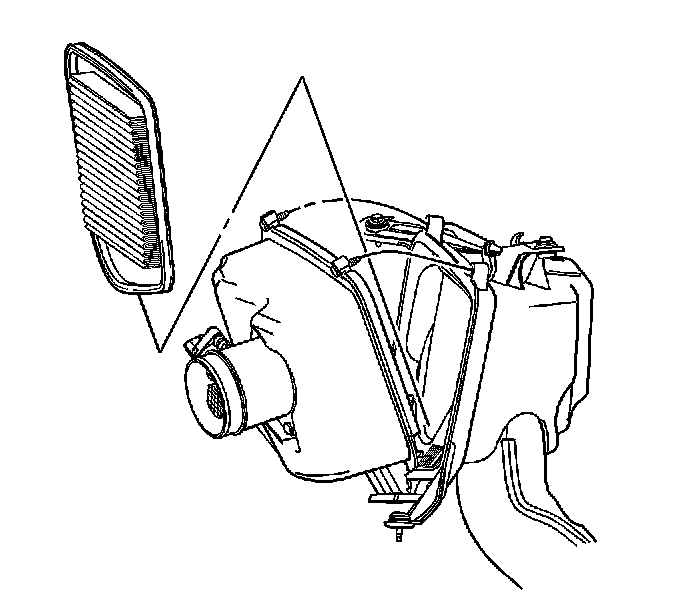

Air Filter Element: Service and Repair
Air Cleaner Element Replacement
Removal Procedure

1. Remove the air cleaner outlet duct from the vehicle. Refer to Air Cleaner Outlet Duct Replacement (Service and Repair) .

2. Remove the air cleaner housing screws.
3. Open the air cleaner housing.
4. Remove the air cleaner element.
5. Remove any loose debris that may be found laying in the base of the air cleaner.
Installation Procedure
1. Install the new air filter element.
2. Close the air cleaner housing.
Notice: Refer to Fastener Notice (Fastener Notice) .
3. Install the air cleaner housing screws.
Tighten the air cleaner housing screws to 3 N.m (27 lb in).
4. Install the air cleaner outlet duct. Refer to Air Cleaner Outlet Duct Replacement (Service and Repair) .